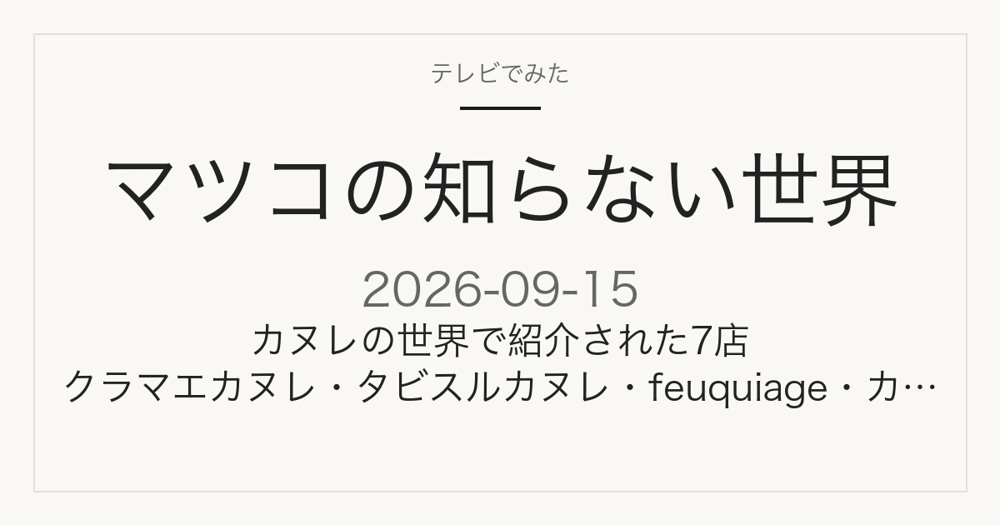

テイクアウト専門
東京都台東区・蔵前
クラマエカヌレ（KURAMAE CANNELE）
焼きたてカヌレの専門店です。蔵前本店はテイクアウトのみ、ほかにエキュート上野にも店舗があります。通常のカヌレのほか、大ぶりの「グランカヌレ」も扱っています。
テレビ紹介商品の記録メディア
この記事には広告・アフィリエイトリンクが含まれる場合があります。
2026年9月15日（火）放送
地味だけど奥深い！カヌレと巨石を2本立てで
放送中に更新しています（最終更新：2026年09月15日 21:39）。カヌレの世界で紹介された店を、確認できたものから追記しています。価格・順位・受賞など未確認の情報は載せていません。
紹介された店を見る
放送中に確認
更新 21:39
カヌレの世界で紹介された7店です。買える場所・通販の有無・営業時間は、各店の公式サイトで確認したもの（2026年9月15日確認）。価格や順位は店舗・番組の公式発表がないため載せていません。
テイクアウト専門
東京都台東区・蔵前
焼きたてカヌレの専門店です。蔵前本店はテイクアウトのみ、ほかにエキュート上野にも店舗があります。通常のカヌレのほか、大ぶりの「グランカヌレ」も扱っています。
オンライン販売のみ
オンライン販売（宮城県産ベリー使用）
実店舗を持たないオンラインショップです。宮城県産のベリーを合わせたカヌレ・ド・ボルドーや、詰め合わせのアソートを販売しています。発送は金曜が中心なので、届くまで数日みておくと確実です。
店舗で購入
東京都調布市
調布本店（東京都調布市小島町1-2-5 アジャンタ調布2 1F）と仙川店（調布市仙川町1-3-32）の2店。営業は10:00〜18:00、火曜定休で、売り切れしだい閉店します。フランス産の発酵バターやシチリア産アーモンドを使った焼き菓子の店で、畠山和也シェフが手がけています。
仙台市内に複数店
宮城県仙台市
パリで修業した池田一紀シェフのパティスリーです。南町通店（仙台市青葉区一番町2-2-3）のほか、定禅寺やS-PAL仙台店など仙台市内に店舗があります。
パンと洋菓子
東京都・代官山
代官山を中心に都内9店舗を展開する、パンと洋菓子の店です。バゲットなどのパンと並んで、カヌレ・ド・ボルドーが看板商品のひとつになっています。
全国のコンビニ
全国のコンビニエンスストア
全国の店舗で買える市販のカヌレです。思い立ったその日に手に入るのが強みです。
全国の店舗
全国の店舗
全国のカルディコーヒーファームで扱っている市販のカヌレです。コーヒーと一緒に買えます。
最終更新：2026年09月15日 23:20
放送前の告知
PAULは、放送前に自社のFacebookで「9月15日放映予定のTBS系『マツコの知らない世界』でPAULが紹介されることになりました」と告知していました。これは店側による告知であり、番組で実際に紹介されたことの確認とは区別しています。
公式予告で確認
放送前の企画紹介
番組公式によると、カヌレの回では次の内容が予定されていました。放送中に確認できた店名は、上の「紹介された店」欄にまとめています。
カヌレの世界のゲストはきださおりさんです。
公式予告で確認
場所は一部のみ発表
もう1本は巨石です。公式には次のようにあります。
巨石の世界のゲストは須田郡司さんです。公式で場所として明示されているのは島根県出雲だけで、ほかの巨石がどこかは放送で確認します。
出典はTBS「マツコの知らない世界」2026年9月15日放送回の番組ページ（2026年9月15日確認）です。番組の内容と放送時間は変更になる場合があります。
見たあとに
放送中に紹介された7店は、上の「紹介された店」欄にまとめています。カヌレは店名さえ分かれば、通販で取り寄せられるものが多い焼き菓子です。
このページは同じURLのまま更新します。放送を見ながらブックマークしておけば、あとで店名・所在地を確認できます。
店名・所在地・公式URLは、店舗の公式情報で確認できたものだけを載せています。価格・順位・受賞など未確認の数値は載せていません。
TBS「マツコの知らない世界 地味だけど奥深い！カヌレ&巨石の世界」放送回ページ
紹介された店の公式サイト：クラマエカヌレ／タビスルカヌレ／feuquiage（フキアージュ）／kazunori ikeda individuel／代官山シェ・リュイ／ローソン／カルディコーヒーファーム（いずれも2026年9月15日確認）
当サイトは番組公式サイトではありません。営業時間や取り扱いは変わることがあるため、お出かけ前に各店の公式サイトでご確認ください。